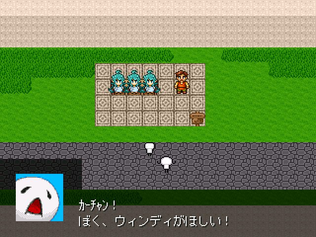

VIPRPG 2017夏の陣No25

【作者名】病葉
【ジャンル】見るゲ
【使用ツクール】2000
【配信/動画】可/可
【投票】可
【作者コメント】
('A`)
('A`)
【管理人コメント】
J( 'ー`)し ｲｲﾖ
J( 'ー`)し ｲｲﾖ
No25 ウィンディを飼いたいんですが…
*書き込みは感想掲示板(外部サイト)から
*書き込みは感想掲示板(外部サイト)から
2:名無しさん 2017/08/02(水) 14:51:20 ID:???
ぼくも飼いたい！
3:名無しさん 2017/08/02(水) 22:39:31 ID:9i8WbSvM
ぼくもほしい！！！１
4:名無しさん 2017/08/03(木) 05:40:56 ID:mPRMMZMM
飼う(意味深)
5:名無しさん 2017/08/05(土) 07:24:00 ID:???
子供が飼うならウィンディよりやみっちの方が丈夫で良いよ！
6:名無しさん 2017/08/05(土) 14:43:44 ID:???
買って数分後に死んでそう
7:名無しさん 2017/08/07(月) 20:42:29 ID:???
死んでも…つかいみち（意味深）はあるもの…
期待
8:名無しさん 2017/08/16(水) 10:48:31 ID:7bOj.7gU0
見たよ、使用素材など.txtに連絡先を乗せて行ってみると、すでに削除ずみとは斬新
9:名無しさん 2017/08/16(水) 11:09:05 ID:csE.d5g20
独特の世界観と社会風刺がきいてて面白かった
ウィンディに幸あれ
10:名無しさん 2017/08/16(水) 14:51:38 ID:RlDxU8JQ0
ラスト、「じんけん」とか「そんげん」あたりの言葉を辞書から削ったディストピアなら最善の解決策なのでは…？
〇後１日以内で回収員に見つけてもらえるってすげぇよ
俺もウィンディに昔話してから看取られたい
11:名無しさん 2017/08/16(水) 16:13:06 ID:lmnzlOP20
子供の頃遊んだウィンディは遊んだり頑張って起きていたりと色々あったけど
大人になるにつれどこかさっぱりした感じになっていくのは大人になる寂しさ的なものを感じる
お店の人は後腐れなく～とか言ってたけど寿命以外は完全に人だしそこまで割り切るのは中々難しそう
12:名無しさん 2017/08/16(水) 17:06:05 ID:akrhtzpQ0
一日だけの命を通して人生を描くって凄いアイディアだと思う
13:名無しさん 2017/08/16(水) 19:38:25 ID:zjLIbk5o0
セーブファイルの命と年齢の演出がいい
後たかしの人生が自分を見ているみたいで思わず感情移入してしまった
14:名無しさん 2017/08/16(水) 21:54:20 ID:RWEyLAWI0
>>8の件も踏まえて、なんか遺書みたいな印象を受けたわ。
15:名無しさん 2017/08/16(水) 22:19:16 ID:yrO.88zk0
1日しか無い命って一発ネタとしてはよくあるけど、それを人生に絡めるってすごいな…
色んなウィンディがいたけど、24歳のたかしに買われた子がさばさばしてて好きかな
話に出てたウィンディだけじゃなく、何億ものウィンディが1日で死んでいったのかと思うととても悲しい
たかしの死後の世間の流れも皮肉が利いててよかった
またどこかであなたの作品が見られることを期待してます
16:名無しさん 2017/08/16(水) 22:31:26 ID:v75t6QIw0
>>8>>14
それはサバンｎ――喪板ツクスレじゃ日常茶飯人事だったから安心するっぺ
喪男クオリティ
17:名無しさん 2017/08/18(金) 00:31:02 ID:Q02dj8g60
貴方らしさのエッセンスみたいな作風だと思ったわ
しかし介護屋で働いてる人間のサガか
70歳ていどで後期高齢者にもならないで認知症にもならないで、ピンピンコロリで氏ぬなんて
まだしも幸福だったんじゃないかなーなんて思ってしまうんだ…
18:名無しさん 2017/08/18(金) 05:00:48 ID:4iKOvXuY0
介護屋ではないが、彼は幸せな最期だったと思っている
どうせ氏ぬのなら、自分のままで氏にたいものだ……
19:名無しさん 2017/08/18(金) 20:04:00 ID:JPnU2UTE0
やっぱり凄い
言葉が出なかった
20:名無しさん 2017/08/19(土) 21:19:04 ID:.GBKw3T20
すごく良かった、何か言いたいけど何も書けない
たかしには買われなかった残りのウィンディ達もその後どうなったんだろうと考えたくなる
21:名無しさん 2017/08/19(土) 22:25:51 ID:A04/jd9.0
誰かに買われて、あのウィンディが言ってたような末路を迎えたのか
はたまた、祭りのテキ屋の金魚よろしく「処分」されたのか…
一日しか生きられないのに祖母ちゃんの話が聞ける彼女らの生殖生態は気になるが触れない方向で行きたい
22:名無しさん 2017/08/20(日) 13:43:38 ID:v75t6QIw0
良い感想思いつかないからとりあえず投票しておこう
23:名無しさん 2017/08/20(日) 18:41:39 ID:GDcqJ8Uc0
4人のウィンディとたかしが出会う順番を入れ替えたらきっとまた話が変わるんだろうな
24:名無しさん 2017/08/22(火) 15:22:47 ID:iGcGGZyA0
遅ればせながら、ただただ良かった。
いわゆる病弱キャラ記号に命を語らせる役割を与えてしまった氏の静謐な観察眼。
私はいち創作趣味人としてあなたに敬服するしかない。
25:名無しさん 2017/08/24(木) 22:08:14 ID:RWIUSWT.0
おまえらは若いからいいが・・・
30過ぎた俺はこうやって死んでいくかホームレスで死んでいくんだろうな
作者さんはペシヒズムらしいが俺もそうなんだろうな
考え方次第でどうにかなるのは若いうちだけだ
26:名無しさん 2017/08/24(木) 23:13:44 ID:9stW/7TQ0
30過ぎならまだまだ若ぇよ、なに言ってんだ
そういうのはせめて90過ぎになってから言え
27:名無しさん 2017/08/24(木) 23:35:37 ID:g3pxIh320
切ない見るゲでした
ウィンディを通じて人生を語らせたアイディアが好きです
ウィンディに個体差が大きくつけられていたことにまず驚きました。
彼女たちの個性は勿論、たかしの顔グラやキャラクターが年をとるごとに少しずつ変化していくのもよかったです。
14歳で一気にキモメンになったり55歳は絶望期だから壮絶…。70歳のドクオは可愛くて笑いましたｗｗ
24歳のたかしが好きですね。なんだかんだ人と距離を掴んで生きている。
ウィンディに恩返しがしたかったのをずっと引っかかっていた。
小さい頃は頑張ってたくさんゲームしてたり、大人になってもオタク頑張るっていうのは自分も思っていましたので
同僚の言葉に引っかかるところがある気がします
ドクオの死は小石を投げつけた波紋として世間に波及したが、その波紋では何することもできなかったというむなしさを感じ取りました
ニュースサイトなどでコメントを残す意味は、自分はそこに生きていたというのを誰かに見てほしいというのはあるかもしれません
ところで後ろのラブストーリーも壮絶な背景があったんだな…とぼうぜん致しましたｗ
カーチャンはあまり語られていませんでしたが、当然支えていただろうな…とか。
色々と膨らませられそうな内容も少なくなかったです。
ウィンディの世界観を含め、素敵な見るゲをありがとうございました。
28:名無しさん 2017/08/31(木) 22:27:32 ID:zLnPvfBM0
背後の人たちもしっかり年月を重ねていたんだな…
セーブ画面を見るたびに、命1がずしりと来る
閉塞感があるのに仄かに温もりが残る不思議な読後感だった
29:名無しさん 2017/09/03(日) 21:18:24 ID:j058E7A60
一日だろうが70年だろうが
やれることをやっていくしかないんだなあ
と思った
30:名無しさん 2017/09/18(月) 21:17:08 ID:u0.i5M9I0
考えさせられる
31:名無しさん 2017/09/27(水) 16:28:10 ID:7nqczmOg0
１４歳のウィンディとの出来事があってこそ後の交流があったのだと思うし、たかしの人生は辛いことも多かったと思うけど、あの最期は羨ましい
取り巻く社会は皮肉交じりに描かれていたけれど、それでも人生の節々で何らかの痕跡は残したわけで、
たかしもまた何かに対してのウィンディのようにも思えて、壮大な外側を想像した
という感想もまた、意図を汲めていないとして、作者さんにかかれば切り捨てられるのかもしれないけど……
最初のPIAI中はただただ「あぁ……」という言葉しかなかった
素敵な時間をありがとうございました
32:名無しさん 2017/10/01(日) 19:16:47 ID:Hxjf1t9w0
プレイしていて涙が止まりませんでした
33:名無しさん 2017/10/01(日) 20:31:39 ID:941uGGwY0
素晴らしかったです。思わず泣いてしまいました。
難しいことは言えませんが、これからも作品を作っていただけると
非常に嬉しいです。
34:名無しさん 2019/11/04(月) 10:19:15 ID:0BmvPz3Y0
エグい系かと思ったら、ウインディと生きる慈しみと諦観が刺さってくる話だった。
特に、責任は固定した自己を前提にする、にはハッとさせられた。ズレてしまう自分を怖がるのは怖い。